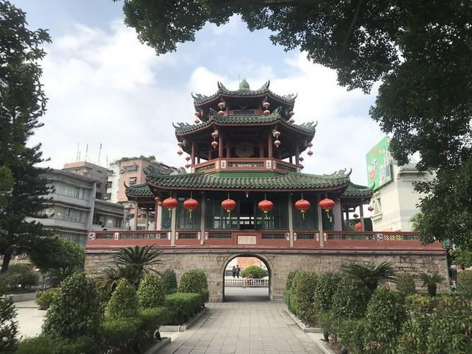
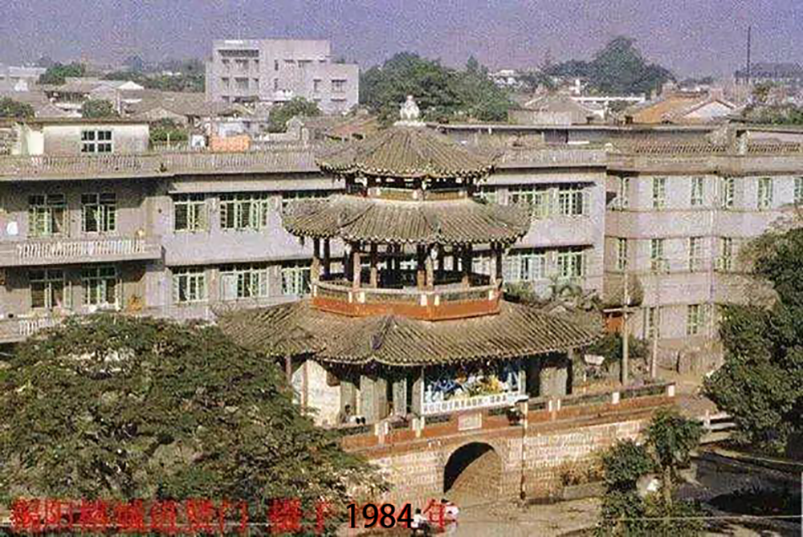
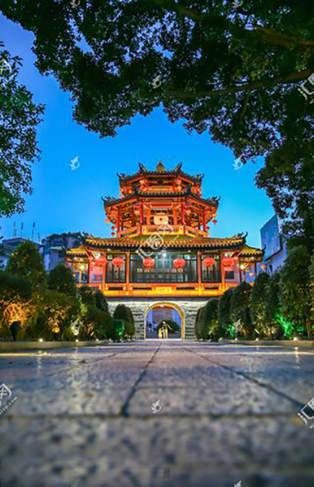
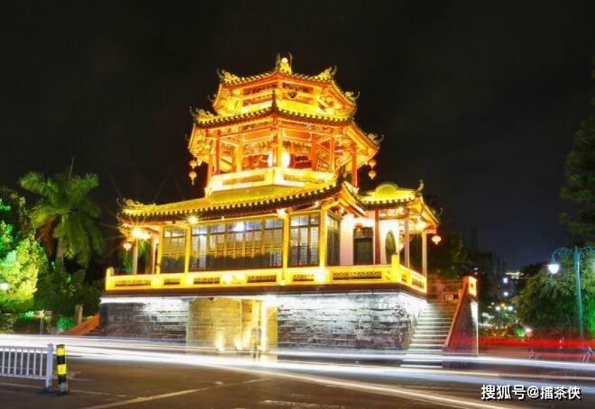
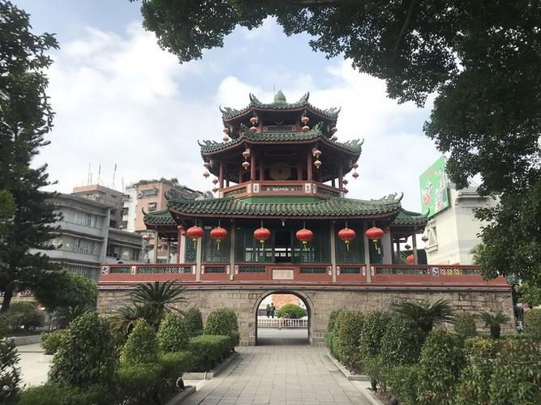
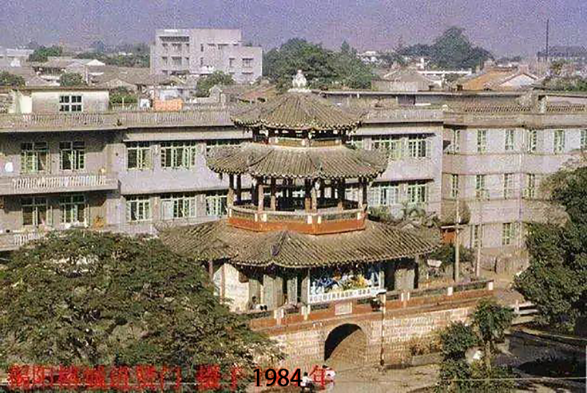
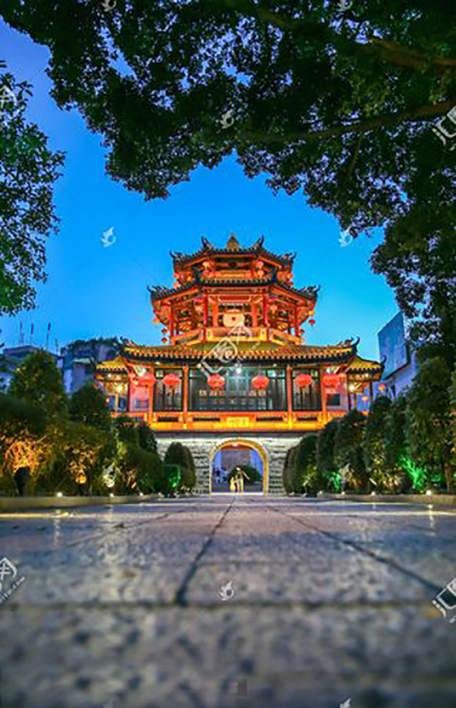
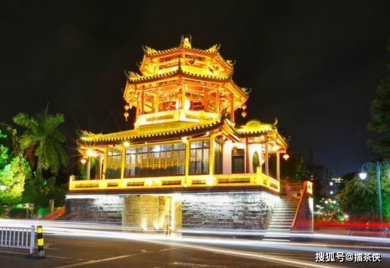

进贤门是揭阳古城的标志性建筑，在揭阳“古八景”中被称作“谯楼晓角”。进贤门是揭阳古城唯一保留下来的城门与城楼，古揭阳城有五座城门，而进贤门是最晚建的第五座城门，也是后来拆城时唯一保留下来的。
现存的进贤门，为2002年重修的。虽说早已都看不到古八景的风韵，但是它是古揭阳现存的城门，也是见证了揭阳的历史和文化。
本地人亲切地称其为红亭。
30年来，进贤门楼几经整修，现右边配上“三江之源”，左边竖立“碑记”，门前坐落一对石狮，为历史城楼锦上添花。
进贤门位于原揭阳古城东、
北二城门之间，始建于明
代天启元年（1622年），距今已有380年的历史。
 




